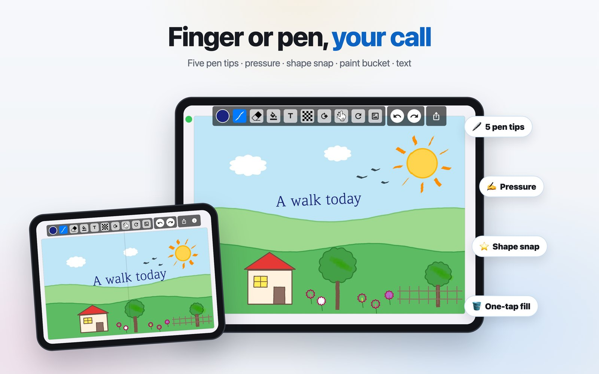
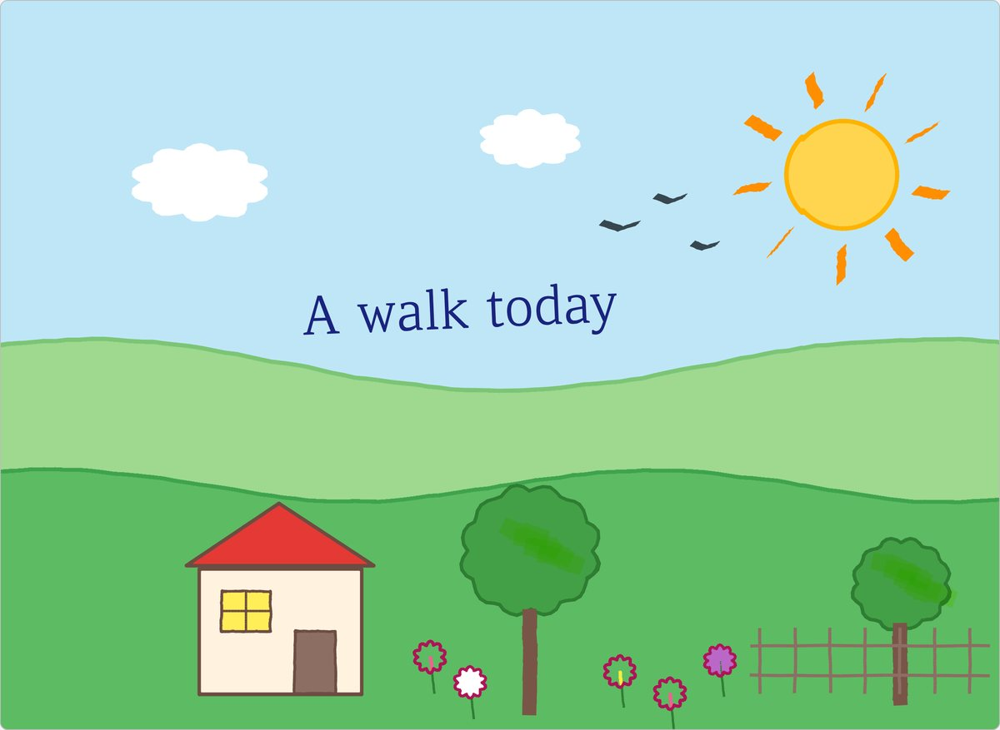
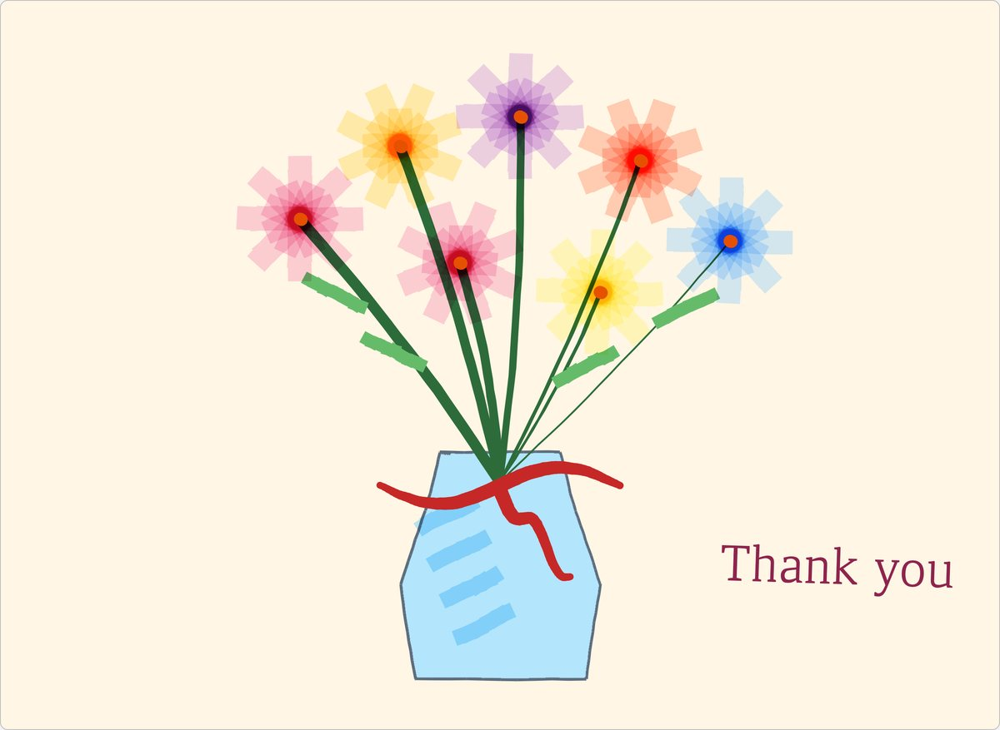
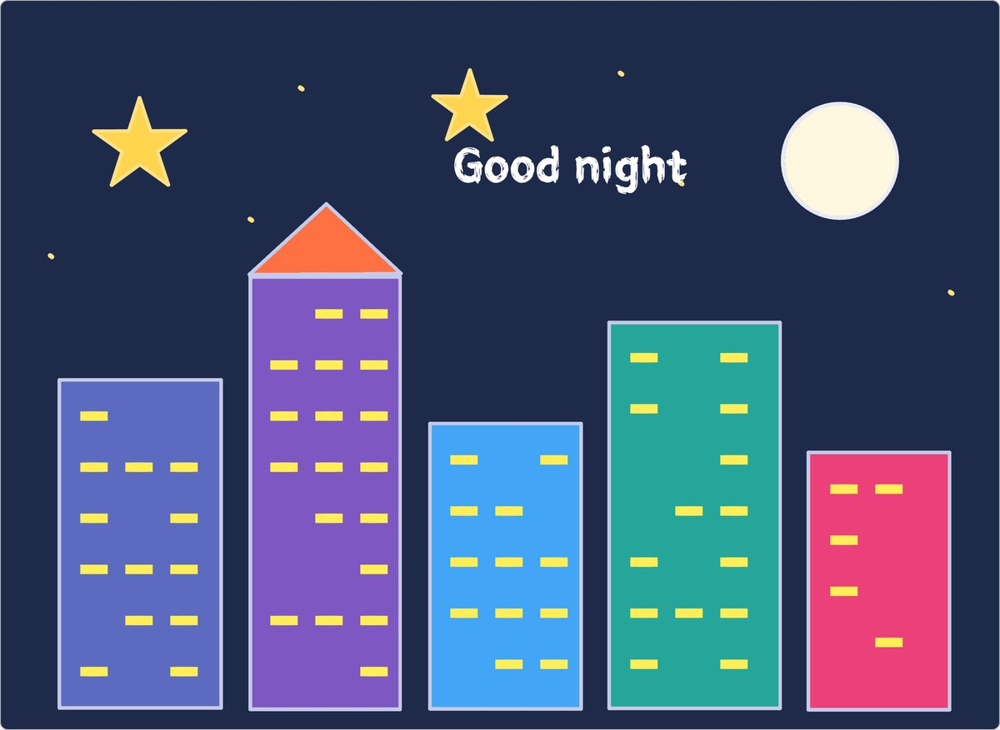
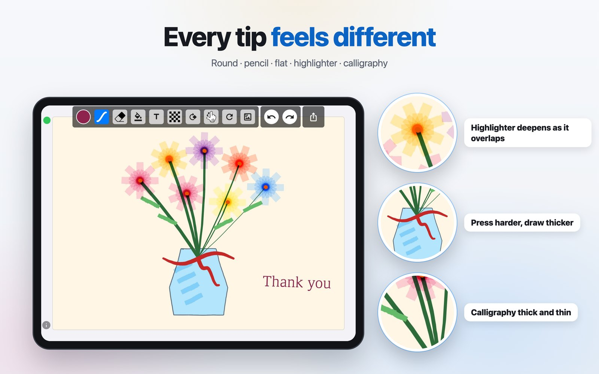
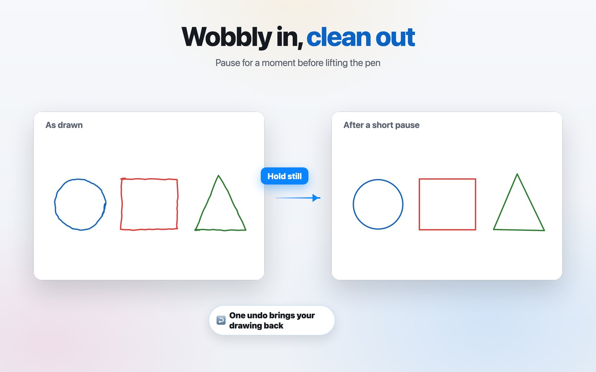
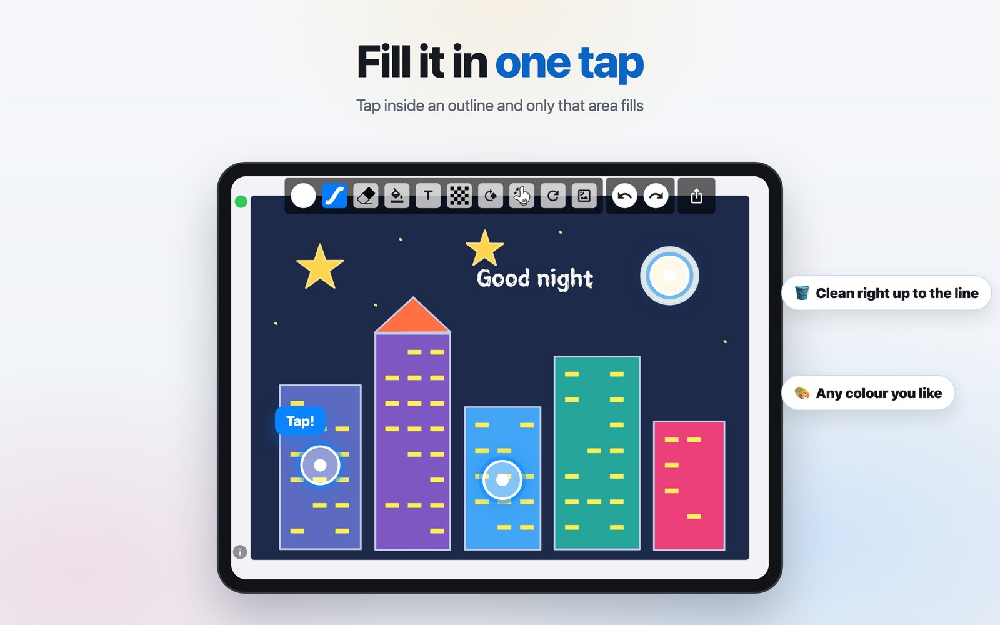
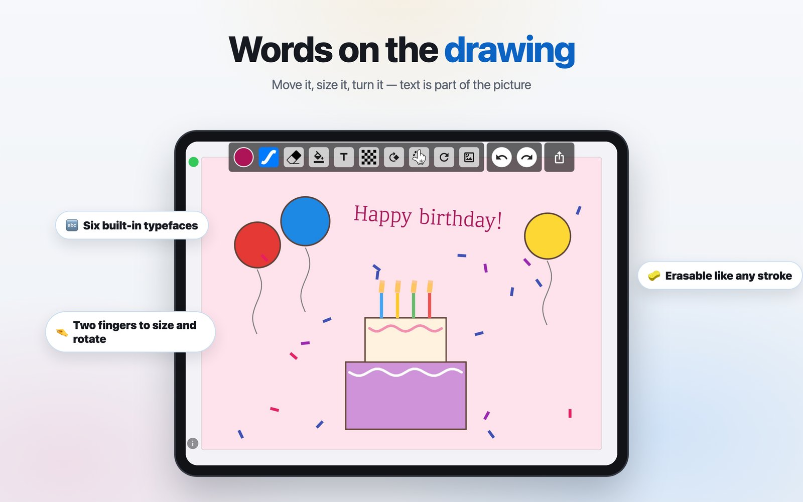
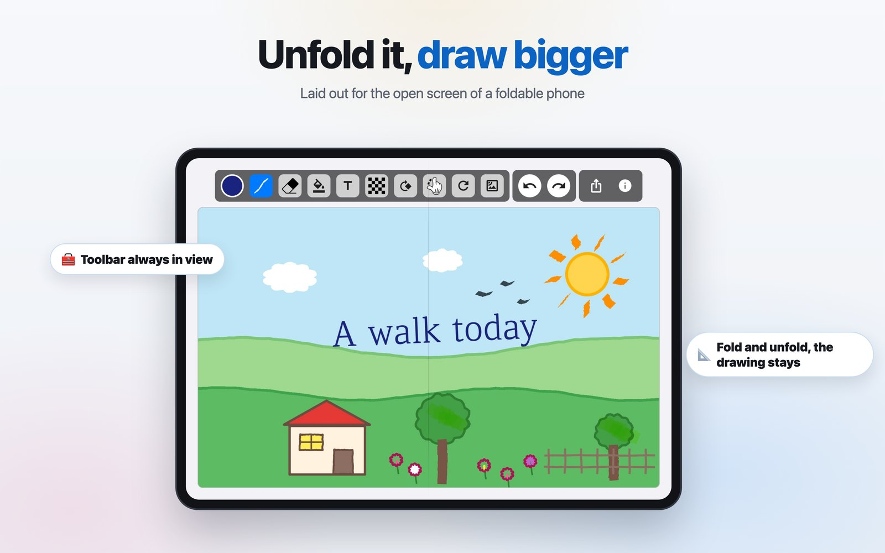

A drawing board that takes a stylus.
Five pen tips, pressure from your Apple Pencil or S Pen, and a palm you can rest on the screen. Rough shapes come out clean, and one tap fills any closed area.

Drawn in PaintBoardPro
All of this, in one app.
Every picture below was drawn inside PaintBoardPro, with nothing but the tools in the app.




Take the tour
Tap through it, one at a time.

Five tips that really draw differently
Round, pencil, flat, highlighter and calligraphy. The highlighter deepens where strokes overlap; the calligraphy nib thickens and thins with the direction you pull it.
- Each tip remembers its own size
- Tip and size in one panel
- The eraser keeps its own size too

Wobbly in, clean out
Draw a line, circle, ellipse, rectangle, triangle or star and pause before lifting the pen — it straightens out, at whatever angle you drew it.
- One undo brings your drawing back
- Lines you meant to be wavy stay wavy
- Finger or pen

Fill a closed area in one tap
Tap inside an outline and only that area fills. The fill stays fixed in the drawing, so you can draw over it or erase it.
- Fills from the colour you tapped
- Clean right up to the line
- Undo works as usual

Words on the drawing, too
Six Korean typefaces plus the system one. Drag to move, pinch to resize, twist to rotate. Text is part of the drawing, so the eraser takes it off.
- Its own text colour
- Two fingers to size and rotate
- Erasable like any stroke

Unfold it, and the board grows
On an unfolded foldable the toolbar stays in view and the board takes the width of the screen. Fold and unfold — your drawing stays exactly where it was.
- iPhone Duo
- Wide inner screens like Galaxy Z Fold
- Tablets keep the original layout
The small things
Made for everyday drawing.
Press harder, draw thicker
Reads Apple Pencil and S Pen pressure: lean in for a bold line, ease off for a fine one.
Rest your hand
While the pen is touching the screen, palm touches are ignored.
Any colour you like
Grid, spectrum, sliders and hex. Separate colours for ink, page and text.
Draw over a photo
Bring in a photo from your library as the background and draw on top.
Turn and zoom
Rotate and zoom the canvas to draw at a comfortable angle.
No sign-up, works offline
No account, no login. Your drawings stay on the device; the network is only used for ads.
Privacy
Your drawings stay on your device.
There is no server to upload them to, and no account to attach them to. Everything is handled on the device and is gone when you delete the app. The app is free and carries ads, which means Google AdMob and Firebase Analytics collect the usual advertising identifier and device information — all of it written out in the privacy policy.
Go draw something.
Free on the App Store and Google Play. It works offline — the network is only ever used for ads.